第 4 讲：角色运动学（续）与关键帧动画
从参考姿态差异出发理解运动重定向，用 CCD/雅可比做全身 IK，再把关键帧之间的过渡交给插值曲线
◆ 学完这一讲，你应该能
能说清参考姿态（T-Pose/A-Pose）不同为什么会导致同一组旋转产生不同动作，并推导单关节与链式重定向公式
能描述 CCD 的迭代过程、每一步在最小化什么，以及目标不可达时的拉伸处理
能写出雅可比矩阵的几何构造（铰链关节 \(\boldsymbol{a}\times\boldsymbol{r}\)）并解释球关节参数化的处理思路
能区分阶跃/线性/多项式/样条插值，说明 C0/C1/C2 连续性与 Runge 现象
能推导三次 Hermite 插值的基函数并写出 Catmull-Rom 的切线取法
能解释四元数 SLERP 的公式与为什么旋转不能直接线性插值
核心结论速记
参考姿态（bind/reference pose）是旋转的“零点”，两个角色参考姿态不同，同一组局部旋转会摆出不同姿势，所以重定向必须做参考姿态之间的变换。
单关节重定向的核心是找一个全局偏移 \(R_{A\to B}\)，使得 \(R_B = R_A R_{A\to B}\) 在参考姿态下成立；链式重定向则把这个偏移按父子关系逐级传播。
CCD 每次只转一个关节，让“该关节到末端”的向量指向目标，反复扫过所有关节直到收敛，简单但可能不自然。
雅可比矩阵把关节角速度映射到末端线速度，几何上每个铰链关节贡献 \(\boldsymbol{a}\times\boldsymbol{r}\)；球关节可拆成多个铰链或用指数坐标处理。
全身 IK 的难点是根节点也参与运动链，以及多个约束（手、脚）同时存在，通常用带权最小二乘或分约束轮流求解。
关键帧动画 = 少量关键帧 + 插值；阶跃不连续、线性只有 C0，三次样条能做到 C1/C2 连续。
高次多项式插值会出现 Runge 现象（边缘振荡），所以实践中用分段低次样条（三次）而不是一个高次多项式。
三次 Hermite 由两端点的值和切线决定，Catmull-Rom 用相邻点差分当切线；旋转插值要用四元数 SLERP，不能对欧拉角或矩阵元素直接线性插值。
011. 参考姿态：旋转的“零点”与重定向问题的由来
上一讲把正向运动学（Forward Kinematics, FK）讲完了：给定每个关节相对父关节的局部旋转 \(Q_i\) 和骨长 \(\boldsymbol{l}_i\)，从根节点一路累乘就能算出每个关节的全局位置和朝向。这一讲先补一个容易被忽略的前提——参考姿态（reference pose / bind pose）。
课件里把参考姿态定义为“所有局部旋转都是单位阵 \(R_i = I\) 的那个姿态”，常见叫法是 T-Pose（双臂水平展开）或 A-Pose（双臂略下垂）。注意：参考姿态不是“没有姿态”，而是“旋转参数全为零时骨架摆成的形状”，它由骨骼的初始朝向和骨长决定。
为什么这件事重要？课件用一组对比图说明：同样是“把手臂向上转 90°”，在 T-Pose 下手臂从水平转到竖直向上，在 A-Pose 下手臂从斜向下转到斜向上——同一组旋转数值，参考姿态不同，最终姿势就不同。这在工程上直接对应“动画重定向（motion retargeting）”：把动捕演员 A 的动作套到体型/绑定不同的角色 B 上，如果直接复制局部旋转，B 会摆出完全错误的姿势。
所以重定向要解决的问题是：已知 A 的参考姿态和 A 的局部旋转 \(R_A\)，求 B 的局部旋转 \(R_B\)，使得 B 摆出的全局姿势与 A 一致（或尽量一致）。课件先讲单个物体，再推广到链。
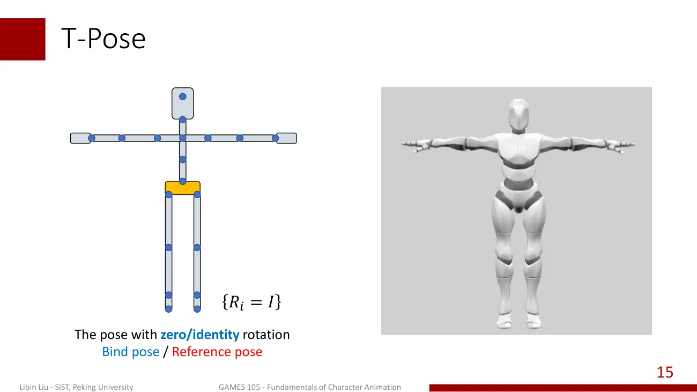
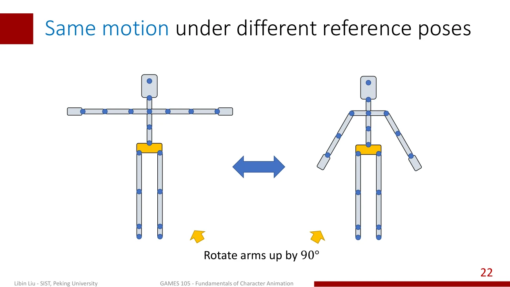
补充说明
课件还展示了 T-Pose/A-Pose 之外的多种参考姿态（如 Relaxed Pose），说明参考姿态是美术绑定时可选的约定。
常见坑
把参考姿态理解成“静止姿态”或“动画第一帧” → 概念混淆 → 记住它是旋转参数全为零的绑定姿态，和动画数据无关。
重定向时直接复制局部旋转 → 目标角色姿势扭曲 → 检查两个角色的参考姿态是否一致，不一致就要做参考姿态变换。
UE / Unity 落地
UE：Skeletal Mesh 的绑定姿态（Bind Pose）在导入时确定；Retarget Manager 里设置 Rig，本质就是在处理两套参考姿态的差异。
Unity：Humanoid 的 Avatar 会把不同角色的骨骼映射到统一的人形骨架，Mecanim 重定向依赖这个映射；Generic 模式则要求骨骼结构一致。
022. 单关节与链式重定向：把参考姿态差异算成一个全局偏移
先看最简单的情况：只有一个物体（或一个关节），A、B 的参考姿态分别对应全局旋转 \(R_A\)、\(R_B\)（这里把参考姿态本身也看成相对世界的一个朝向）。我们希望找一个全局偏移 \(R_{A\to B}\)，使得在参考姿态下把 A 的朝向“搬”到 B 上： \[ R_B = R_A \, R_{A\to B} \] 于是 \[ R_{A\to B} = R_A^{-1} R_B \] 当 A 转了 \(R_A\) 时，B 应转 \(R_B = R_A R_{A\to B}\)。课件还提到反向变换满足 \(R_{B\to A} = R_{A\to B}^{-1}\)，因为旋转矩阵正交，逆就是转置。
但角色是一串关节，不是单个物体。链式重定向的关键观察是：每个关节的全局朝向等于父关节全局朝向乘自己的局部旋转。设关节 \(i\) 的父节点为 \(p(i)\)，A 的全局朝向为 \(Q_i^A\)，B 的为 \(Q_i^B\)。我们想要一个逐关节的偏移，使得 \[ Q_i^B = Q_{p(i)}^B \, R_i^B \] 并且 B 的全局朝向与 A 的全局朝向通过同一个“全局朝向偏移”联系起来。课件给出的做法是：先算根节点的偏移，再让每个关节的局部旋转吸收“父节点偏移”和“自身偏移”的差： \[ R_i^B = \big(Q_{p(i)}^B\big)^{-1} \, Q_i^A \, R_{A\to B} \] 直观理解：A 的全局朝向 \(Q_i^A\) 先乘上全局偏移变成 B 想要的全局朝向，再除以 B 父节点的全局朝向，就得到 B 的局部旋转。这样整条链的每一级都自动对齐，不需要逐关节手工调。
课件最后把结论收成一句：重定向就是 \(R_B \Leftarrow R_A\) 的映射，已知 A 的参考姿态和旋转，求 B 的旋转；对链式结构，这个映射通过父子关系递归传播。
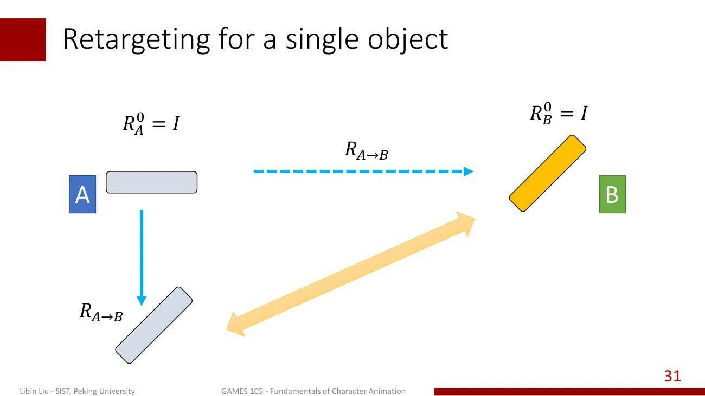
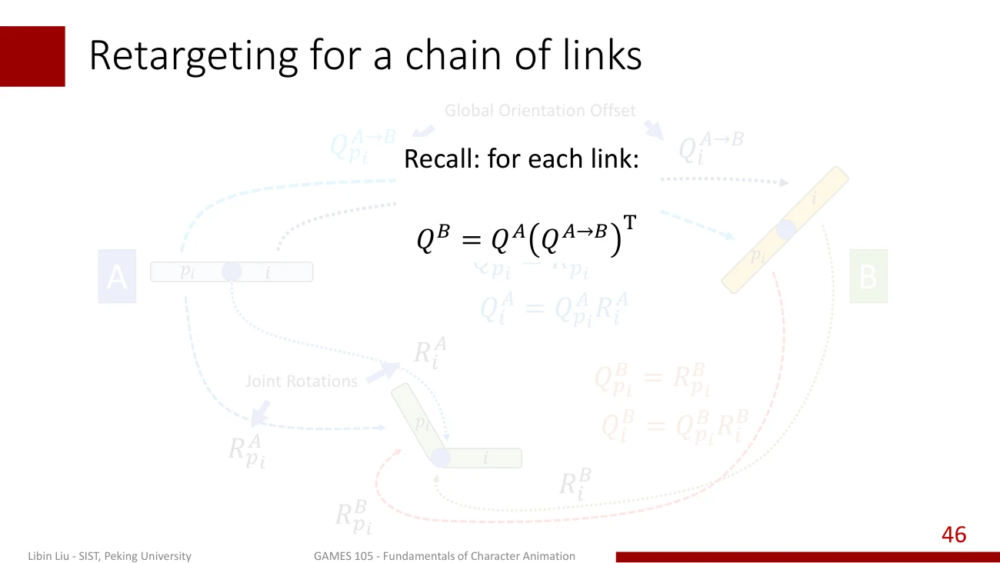
补充说明
课件在 P49-P52 把链式公式与参考姿态重定向合并，给出最终的 \(Q^{A\to B}\) 与 \(T^{A\to B}\) 形式，核心思想与本节一致。
常见坑
把 \(R_{A\to B}\) 当成局部旋转直接乘在每根骨头上 → 整条链的朝向被重复叠加 → 偏移只应在全局层面用一次，局部旋转要除以父节点全局朝向。
旋转矩阵求逆用错（写成普通转置但矩阵不正交） → 结果漂移 → 确认是纯旋转矩阵再转置，含缩放时要单独处理。
UE / Unity 落地
UE：Retarget Manager 的 Rig 设置本质上就是为每根骨骼建立 A→B 的参考姿态映射；IK Retargeter 会处理链式传播。
Unity：Humanoid Avatar 的肌肉空间（muscle space）把不同角色的参考姿态归一化，重定向时再还原到目标骨架。
033. CCD：一次只转一个关节的迭代 IK
逆运动学（Inverse Kinematics, IK）是已知末端目标 \(\tilde{\boldsymbol{x}}\)，求关节角 \(\boldsymbol{\theta}\)。课件先回顾把它写成优化问题： \[ \min_{\boldsymbol{\theta}} \; \big\| f(\boldsymbol{\theta}) - \tilde{\boldsymbol{x}} \big\|^2 \] 其中 \(f(\boldsymbol{\theta})\) 是正向运动学算出的末端位置。
循环坐标下降（Cyclic Coordinate Descent, CCD）是最直观的解法：从离末端最近的关节开始，每次只动一个关节，转它使得“该关节到末端”的向量 \(\boldsymbol{l}\) 指向目标 \(\tilde{\boldsymbol{x}}\)；然后沿链向上一个关节，重复；扫完一遍再从头扫，直到末端足够接近目标。每一步只解一个一维/低维问题，所以实现简单、不需要求导。
课件特别讨论了目标不可达的情况：如果目标比整条链伸直还远，旋转无法缩短距离，此时可以让骨长“拉伸”（stretch link），即把末端沿链方向拉长到目标，保证手/脚能碰到目标。这在游戏里对应“IK 拉伸”选项。
CCD 的缺点也来自它的贪心：每次只优化当前关节，容易陷入局部最优，动作可能不自然（比如肘部翻转）。工程上常加关节角限制、阻尼或改用雅可比方法。
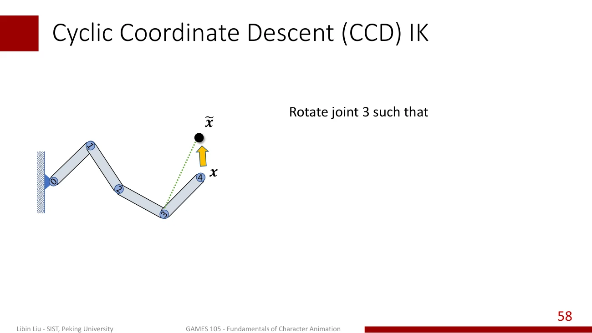
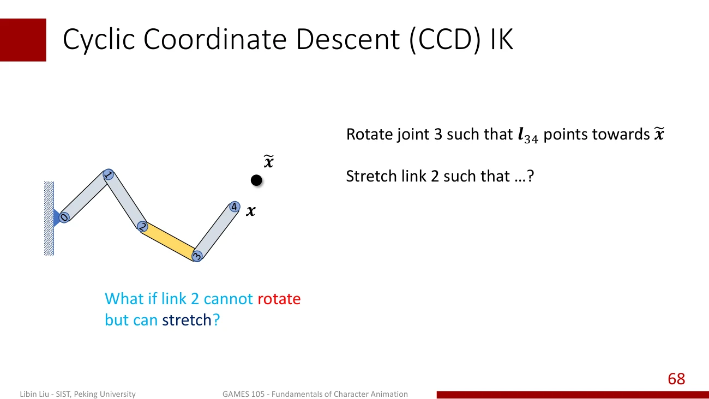
补充说明
CCD 的每一步等价于在当前关节上最小化末端到目标的距离，但只在该关节的自由度上最小化，所以是坐标下降。
常见坑
CCD 不收敛或来回抖动 → 每步旋转角过大、没有阻尼 → 加步长上限或阻尼系数，并设最大迭代次数。
末端到了目标但肘部朝向诡异 → 贪心解不唯一 → 加关节角限制或改雅可比方法。
目标过远时骨骼无限拉伸 → 没设拉伸上限 → 给拉伸设最大比例（如 1.2 倍）。
UE / Unity 落地
UE：AnimGraph 的 Two Bone IK 节点就是解析解的两骨 IK，适合手臂/腿；Full Body IK 节点则支持多链和关节限制。
Unity：Animation Rigging 包里的 Chain IK Constraint 类似 CCD 思路，Two Bone IK Constraint 是解析解。
CCD 伪代码：每轮从末端向根扫一遍（cpp）
for (int iter = 0; iter < maxIter; ++iter) {
for (int j = end; j >= root; --j) {
Vec3 toEnd = endPos - jointPos[j];
Vec3 toTarget = target - jointPos[j];
Quat delta = rotationBetween(toEnd, toTarget); // 最小旋转
rotateJoint(j, delta);
updateFK(j); // 更新该关节之后的全局位置
}
if (distance(endPos, target) < eps) break;
}044. 雅可比方法与全身 IK：把末端速度映射回关节速度
雅可比矩阵（Jacobian matrix）\(J\) 描述末端位置对关节角的偏导： \[ J = \frac{\partial f}{\partial \boldsymbol{\theta}} = \left[ \frac{\partial f}{\partial \theta_1} \; \frac{\partial f}{\partial \theta_2} \; \cdots \; \frac{\partial f}{\partial \theta_n} \right] \] 它把关节角速度映射成末端线速度：\(\dot{\boldsymbol{x}} = J \dot{\boldsymbol{\theta}}\)。IK 就变成解 \(J \Delta\boldsymbol{\theta} = \Delta\boldsymbol{x}\)，常用雅可比转置、伪逆或阻尼最小二乘。
课件给了一个漂亮的几何构造：假设关节 \(i\) 是铰链关节，转轴单位向量为 \(\boldsymbol{a}_i\)，关节到末端的向量为 \(\boldsymbol{r}_i\)，则 \[ \frac{\partial f}{\partial \theta_i} = \boldsymbol{a}_i \times \boldsymbol{r}_i \] 因为绕轴转一个小角度，末端位移就是“轴 × 力臂”。这比数值差分快且精确。
球关节（ball joint）有三个自由度，不能直接套一个轴。课件的处理思路是：把球关节参数化成若干铰链（例如三个正交轴），或者用指数坐标/四元数参数化，再对每个参数求偏导；也可以把球关节拆成“扭转 + 摆动”分别处理。
全身 IK（full-body IK）的难点有两个：一是运动链会穿过根节点（比如左手到右手要经过根），根变换本身也要参与求解；二是同时有多个约束（双手、双脚），需要联立优化或分约束轮流求解。课件提到工程上常见做法是“每个约束单独建优化问题、轮流求解”，以及角色绑定里预置多条 IK 链，用户按需激活。
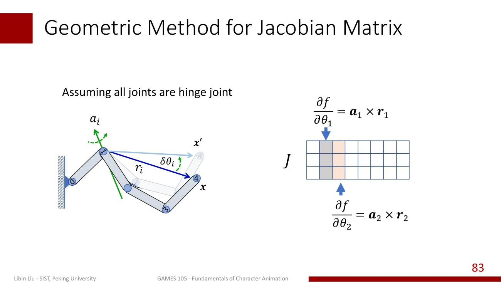
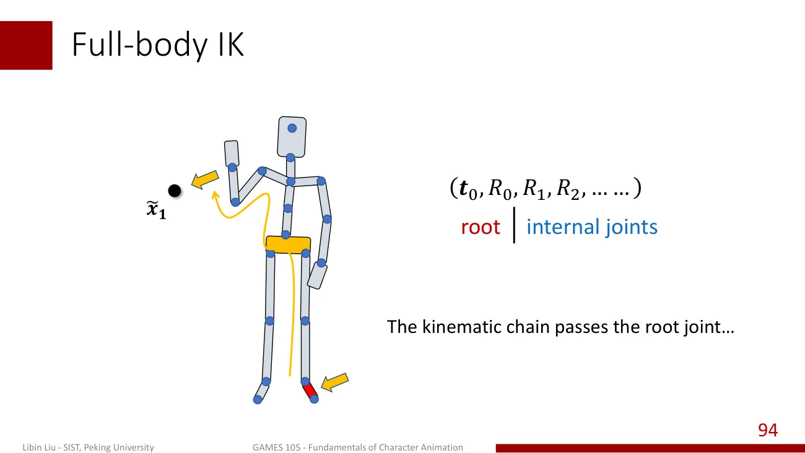
补充说明
课件 P81 还提到 Jacobian Transpose 方法，它不需要求逆，计算便宜但收敛慢，常用于实时游戏。
常见坑
雅可比矩阵在奇异位形（手臂完全伸直）求逆爆炸 → 末端速度突变 → 用阻尼最小二乘（加 \(\lambda I\)）代替纯伪逆。
球关节只用一个轴求偏导 → 漏掉两个自由度，IK 解不完整 → 把球关节拆成三个铰链或对三个参数分别求导。
多约束同时求解时互相打架 → 手到了脚跑了 → 用带权最小二乘或分约束轮流求解并检查优先级。
UE / Unity 落地
UE：Full Body IK 节点内部用雅可比/优化方法，支持多效应器（Effector）和关节限制；Control Rig 里可以逐链搭 IK。
Unity：Animation Rigging 的 Multi-Aim / Chain IK 可组合多个约束；Final IK 插件提供 FBBIK 全身解算。
阻尼最小二乘更新关节角（cpp）
// J: 3 x n, dx: 3 x 1, lambda: 阻尼
Mat Jt = J.transpose();
Mat A = J * Jt + lambda * lambda * Mat::Identity(3, 3);
Vec dtheta = Jt * A.inverse() * dx; // n x 1
theta += dtheta;055. 关键帧与插值：阶跃、线性与连续性
从这一节开始进入关键帧动画（keyframe animation）。课件用走马灯（zoetrope）说明动画的本质是离散画面快速播放；在数字动画里，美术只摆少量关键帧（keyframe），中间帧（in-betweens）由插值算法生成。
插值的数学定义：给定数据点 \(D = \{(x_i, y_i)\}_{i=1}^N\)，找一个函数 \(f(x)\) 使得 \(f(x_i) = y_i\) 对所有数据点成立；在数据范围之外叫外插（extrapolation）。
课件依次比较了几种插值：
- 阶跃插值（stepped interpolation）：\(f(x) = y_i\)（\(x\) 落在第 \(i\) 段），值突变，只有 C0 以下，适合做“卡帧”风格。
- 线性插值（linear interpolation）：\(f(x) = y_0 + \frac{x-x_0}{x_1-x_0}(y_1-y_0)\)，位置连续但速度在关键帧处跳变，只有 C0 连续。
- 平滑性/连续性：课件定义 C0（位置重合）、C1（一阶导连续，速度连续）、C2（二阶导连续，加速度连续）。动画要看起来顺滑，至少 C1。
所以自然要问：能不能用一条曲线同时穿过所有点且光滑？这就引出了多项式插值和样条插值。
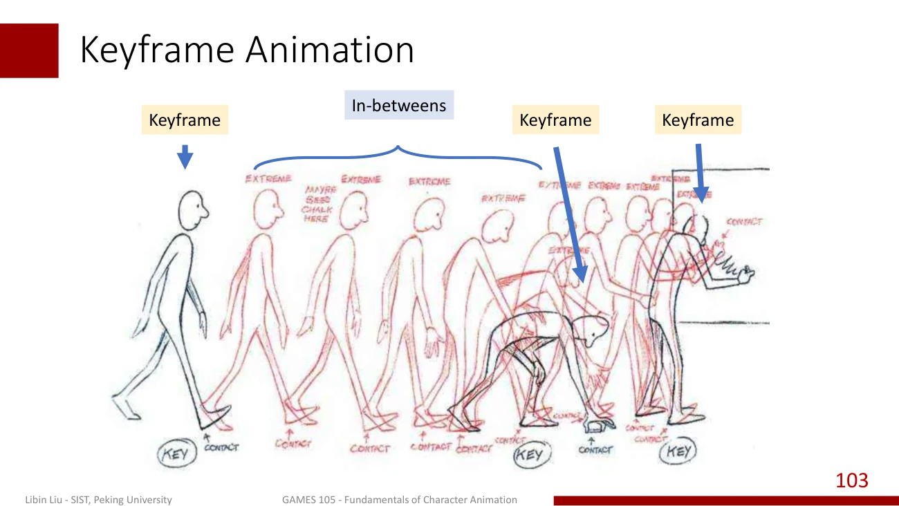
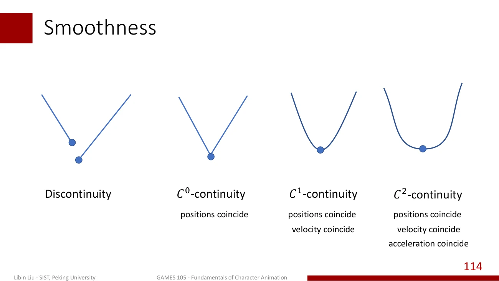
补充说明
课件 P104-P106 用同一组数据点反复强调插值的定义与内外插的区别。
常见坑
所有通道都用线性插值 → 动作有“折线感”、速度突变 → 对旋转和位置改用三次样条或引擎的曲线插值。
把阶跃插值当默认 → 动作卡顿 → 检查关键帧的插值模式是否被设成 Constant。
UE / Unity 落地
UE：Sequencer 和动画曲线都支持 Constant/Linear/Cubic 插值模式；AnimSequence 的关键帧默认是曲线拟合。
Unity：Animation 窗口里关键帧的 Interpolation 可选 Constant/Linear/Curve，Curve 就是三次样条。
066. 多项式插值与 Runge 现象：为什么不用一条高次曲线
最直接的想法是用一个 \(n\) 次多项式 \(f(x) = a_0 + a_1 x + \cdots + a_n x^n\) 穿过所有 \(N\) 个点。因为 \(N\) 个点给出 \(N\) 个方程，恰好能定出 \(N\) 个系数（\(n = N-1\)）。课件展示了这个线性方程组的矩阵形式，并指出它一般有唯一解。
但问题来了：高次多项式在数据点之间可能剧烈振荡，尤其在区间边缘。这就是 Runge 现象（Runge's phenomenon）：多项式次数越高，边缘振荡越严重。课件用图展示了这一点。对动画来说，这意味着关键帧之间会出现不想要的“过冲”，角色可能穿模或抖动。
结论：不要用一个高次多项式插所有点，而要用分段低次多项式，也就是样条（spline）。每一段只负责相邻两个关键帧之间，次数低（通常三次），既光滑又可控。
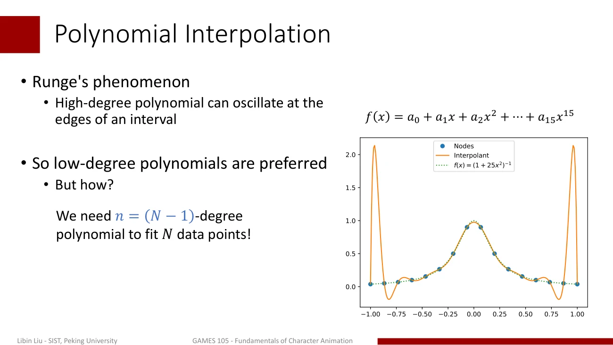
补充说明
课件 P116-P120 推导了多项式系数矩阵的可解性，P121 给出 Runge 现象的反例。
常见坑
关键帧很多时仍用单一高次多项式 → 边缘过冲、角色抖动 → 改成分段三次样条。
把过冲误认为“物理弹性” → 动作不自然 → 检查插值方式，必要时加切线约束。
UE / Unity 落地
UE：Curve Editor 默认用三次插值而不是高次多项式，就是为了避免过冲。
Unity：Animation 窗口的 Curve 模式内部是三次样条，不会出现高次振荡。
077. 三次样条与 Hermite 基函数：工程上真正用的插值
样条插值（spline interpolation）用分段低次多项式：\(f(x) = S_i(x)\) 当 \(x \in [x_i, x_{i+1}]\)。课件从分段线性（C0）讲到三次多项式（C2），并说明三次是“能保证 C2 连续的最低次数”。
对每个区间，三次多项式写成 \(S_i(x) = a_i x^3 + b_i x^2 + c_i x + d_i\)。要让整条曲线 C2 连续，需要在每个内部节点处满足：左右函数值相等、一阶导相等、二阶导相等。再加上两端边界条件，就能解出所有系数。
工程上更常用的是 三次 Hermite 插值（cubic Hermite interpolation）：不直接给系数，而是给两个端点的值 \(y_0, y_1\) 和切线 \(m_0, m_1\)，然后构造 \[ S(t) = H_{00}(t) y_0 + H_{10}(t) m_0 + H_{01}(t) y_1 + H_{11}(t) m_1 \] 其中 \(t \in [0,1]\) 是区间内的归一化参数，四个基函数为 \[ H_{00} = 2t^3 - 3t^2 + 1,\quad H_{10} = t^3 - 2t^2 + t,\quad H_{01} = -2t^3 + 3t^2,\quad H_{11} = t^3 - t^2 \] 它们满足“在 0 或 1 处取 1、其余为 0、导数也对应”的性质，所以插值条件自动成立。
Catmull-Rom 样条是 Hermite 的一个特例：切线不手工给，而用相邻点的差分 \(m_i = \frac{p_{i+1} - p_{i-1}}{x_{i+1} - x_{i-1}}\) 估计。这样只要给数据点就能自动生成光滑曲线，非常适合动画曲线。课件还提到 Edwin Catmull 因此获得 2019 年图灵奖（与 Pat Hanrahan 共享）。
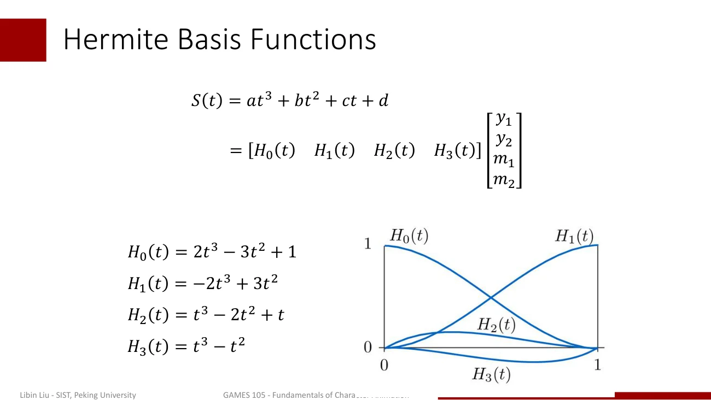
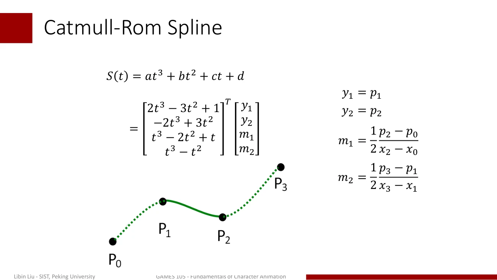
补充说明
课件 P141-P144 用矩阵形式推导了 Hermite 系数与端点值/切线的关系，P146 把它推广到向量值曲线（每个分量独立插值）。
常见坑
切线给成零 → 关键帧处速度停住，动作“一顿一顿” → 用 Catmull-Rom 或引擎自动切线。
参数 \(t\) 没归一化就直接代公式 → 曲线形状错 → 先把 \(x\) 映射到 \([0,1]\)。
不同区间切线不匹配 → C1 断裂 → 确保相邻段共享同一个切线值。
UE / Unity 落地
UE：Curve Editor 的 Auto/User/Break 切线就是 Hermite 切线；Auto 类似 Catmull-Rom。
Unity：Animation 窗口的 Curve 切线可设为 Auto/Free/Smooth，Smooth 对应自动平滑切线。
三次 Hermite 求值（cpp）
float Hermite(float y0, float y1, float m0, float m1, float t) {
float t2 = t*t, t3 = t2*t;
float h00 = 2*t3 - 3*t2 + 1;
float h10 = t3 - 2*t2 + t;
float h01 = -2*t3 + 3*t2;
float h11 = t3 - t2;
return h00*y0 + h10*m0 + h01*y1 + h11*m1;
}088. 旋转的插值：为什么必须用四元数 SLERP
位置可以逐分量插值，旋转不行。课件列出旋转的几种表示：旋转矩阵、欧拉角、轴角、四元数。对矩阵元素直接线性插值会破坏正交性（插值结果不再是旋转）；对欧拉角线性插值会在万向节附近出现诡异路径，而且“绕哪个轴转”依赖参数化。
四元数（quaternion）\(\boldsymbol{q} = (w, \boldsymbol{v})\) 表示绕单位轴 \(\boldsymbol{u}\) 转 \(\theta\)：\(\boldsymbol{q} = (\cos\frac{\theta}{2}, \sin\frac{\theta}{2}\boldsymbol{u})\)。两个单位四元数 \(\boldsymbol{q}_0, \boldsymbol{q}_1\) 之间的球面线性插值（SLERP）为 \[ \boldsymbol{q}(t) = \frac{\sin((1-t)\theta)}{\sin\theta}\boldsymbol{q}_0 + \frac{\sin(t\theta)}{\sin\theta}\boldsymbol{q}_1 \] 其中 \(\cos\theta = \boldsymbol{q}_0 \cdot \boldsymbol{q}_1\)。它沿着单位四元数球面上的大圆走，角速度恒定，结果始终是单位四元数。
课件还提到 Ken Shoemake 1985 年的论文把四元数曲线引入动画，以及“四元数样条”的问题：四元数空间不是线性的，直接对多个四元数做三次样条需要特殊处理（如 Squad）。实践中引擎通常对相邻关键帧做 SLERP，或用四元数样条。
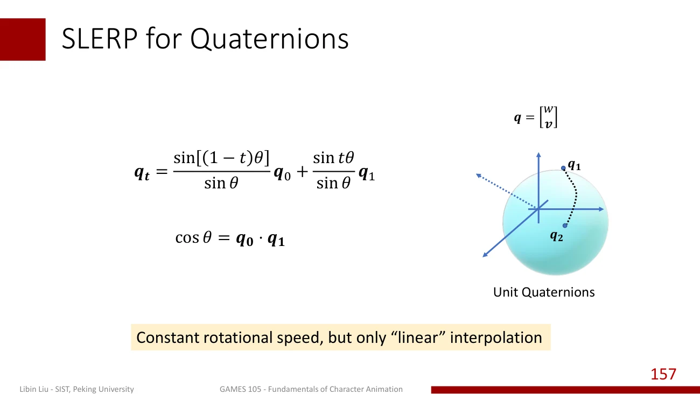
补充说明
课件 P157 提到 Ken Shoemake 的 SIGGRAPH 1985 论文，是四元数动画的经典文献。
常见坑
对欧拉角直接线性插值 → 旋转路径诡异、万向节附近跳变 → 改用四元数 SLERP。
四元数点积为负时直接 SLERP → 走远弧、旋转方向反 → 先检查点积，为负就把一个四元数取反。
插值后忘记归一化 → 四元数漂移 → 每步归一化。
UE / Unity 落地
UE：FQuat::Slerp 就是 SLERP；动画蓝图里旋转插值节点默认用四元数。
Unity：Quaternion.Slerp / Lerp（Lerp 内部也是球面插值并做了最短路径处理）。
四元数 SLERP（含最短路径处理）（cpp）
Quat Slerp(Quat q0, Quat q1, float t) {
float d = dot(q0, q1);
if (d < 0) { q1 = -q1; d = -d; } // 最短路径
if (d > 0.9995f) return normalize(lerp(q0, q1, t)); // 近似线性
float theta = acos(d);
float s0 = sin((1-t)*theta) / sin(theta);
float s1 = sin(t*theta) / sin(theta);
return normalize(s0*q0 + s1*q1);
}引擎对照表
| 概念 / 效果 | Unreal Engine | Unity |
|---|---|---|
参考姿态/绑定姿态 | Skeletal Mesh 的 Bind Pose；Retarget Manager 的 Rig 设置 | Avatar 的 T-Pose 配置；Humanoid 肌肉空间 |
运动重定向 | IK Retargeter / Retarget Manager | Mecanim Humanoid 重定向；Animation Rigging 的 Retargeting |
两骨 IK | Two Bone IK 节点 | Two Bone IK Constraint |
全身 IK | Full Body IK 节点；Control Rig | Animation Rigging 多约束组合；Final IK FBBIK |
关键帧插值模式 | Curve Editor 的 Constant/Linear/Cubic 与切线 | Animation 窗口的 Constant/Linear/Curve 与切线 |
旋转插值 | FQuat::Slerp | Quaternion.Slerp |
术语双语表
| English | 中文 | 说明 |
|---|---|---|
| Reference Pose / Bind Pose | 参考姿态/绑定姿态 | 所有局部旋转为单位阵时的骨架姿态，是旋转的零点。 |
| Motion Retargeting | 运动重定向 | 把一套骨架的动画映射到另一套骨架，需处理参考姿态差异。 |
| CCD | 循环坐标下降 | 每次只转一个关节使末端指向目标的迭代 IK。 |
| Jacobian Matrix | 雅可比矩阵 | 末端位置对关节角的偏导矩阵，把关节速度映射为末端速度。 |
| Full-body IK | 全身 IK | 多约束、运动链穿过根节点的 IK 问题。 |
| Keyframe | 关键帧 | 美术手工摆放的关键姿态，中间帧由插值生成。 |
| C0/C1/C2 Continuity | C0/C1/C2 连续性 | 位置/速度/加速度连续，动画至少需要 C1。 |
| Runge's Phenomenon | 龙格现象 | 高次多项式插值在区间边缘剧烈振荡。 |
| Cubic Hermite Spline | 三次 Hermite 样条 | 由端点值和切线决定的三次曲线，四个基函数。 |
| SLERP | 球面线性插值 | 单位四元数之间的等角速度插值，保证结果为旋转。 |
课后练习
01 设角色 A 的参考姿态全局旋转为 \(R_A\)，角色 B 为 \(R_B\)。写出单关节重定向的全局偏移 \(R_{A\to B}\)，并说明当 A 的局部旋转为 \(R\) 时 B 应取什么旋转。
查看答案
提示：
从参考姿态下 \(R_B = R_A R_{A\to B}\) 出发。
\(R_{A\to B} = R_A^{-1} R_B\)；B 的旋转为 \(R_B' = R \, R_{A\to B}\)（若 \(R\) 是 A 的全局旋转）。注意链式情况下还要除以 B 父节点的全局朝向。
02 用 CCD 解一个两骨 IK：根在原点，骨长均为 1，目标在 \((2,0)\)。描述第一轮迭代后末端能否到达目标，若不能说明原因和拉伸处理。
查看答案
提示：
两骨伸直总长 2，目标距离 2。
目标距离恰好等于两骨伸直总长 2，CCD 旋转可以让链伸直并到达目标（理论上可达，但处于奇异位形，雅可比方法会退化）。若目标在 \((2.5,0)\)，则不可达，需要拉伸骨长或接受误差；工程上给拉伸设上限。
03 写出三次 Hermite 插值的四个基函数，并验证 \(H_{00}(0)=1\)、\(H_{00}(1)=0\)、\(H_{00}'(0)=0\)。
查看答案
提示：
直接对 \(2t^3-3t^2+1\) 求值求导。
\(H_{00}=2t^3-3t^2+1\)，\(H_{10}=t^3-2t^2+t\)，\(H_{01}=-2t^3+3t^2\)，\(H_{11}=t^3-t^2\)。\(H_{00}(0)=1\)，\(H_{00}(1)=2-3+1=0\)，\(H_{00}'=6t^2-6t\)，在 0 处为 0。
04 为什么旋转不能用欧拉角线性插值？给出一个会出问题的具体例子。
查看答案
提示：
考虑绕不同轴的组合和万向节。
欧拉角线性插值是在参数空间走直线，映射回旋转空间后路径依赖参数化，且经过万向节附近时角速度剧烈变化。例如从 \((0,0,0)\) 插到 \((90°,90°,0)\)，中间会经过不自然的扭转路径；用四元数 SLERP 则沿最短大圆走。
05 在 UE 里做一个实验：给同一个角色导入两套参考姿态不同的动画（T-Pose 与 A-Pose），观察直接播放与用 IK Retargeter 重定向的差异，记录现象。
查看答案
提示：
关注手臂和肩膀的朝向。
直接播放时，由于参考姿态不同，手臂会明显上翘或下垂，姿势错位；用 IK Retargeter 设置 Rig 后，重定向会按参考姿态偏移修正，手臂朝向与源动画一致。这说明重定向的核心是参考姿态变换，而非简单复制局部旋转。